Captura 1 de 19 — Panel de IAM
Inicio
Acceso al panel principal de IAM y a su menú de administración de identidades.
CAPTURA DOCUMENTADA
La imagen se carga desde media/ al guardar los archivos juntos.
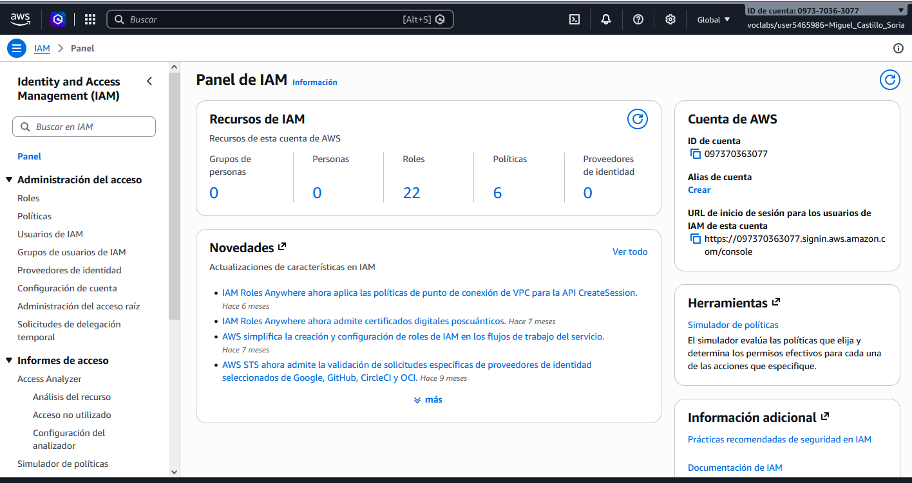
Usuarios, grupos, políticas y roles. Memoria de la práctica: simulación de identidades y permisos en AWS Academy.
La práctica recorre grupos, usuarios, políticas y roles de AWS IAM. El enunciado indica restricciones de creación en Academy; se utilizan los asistentes para representar las configuraciones.
Las evidencias se enlazan desde media/, con los nombres acordados y extensión .PNG.
Reúne usuarios para asignarles permisos de forma conjunta.
Identidad a la que se pueden asignar permisos directamente o mediante grupos.
Documento JSON que define efectos, acciones y recursos sobre los que se aplican permisos.
Identidad asumible: la política de confianza define quién puede asumirla y las políticas de permisos qué permite hacer.
Recorrido documentado en 19 capturas: grupos, usuarios, políticas, roles y cierre.
Inicio
Acceso al panel principal de IAM y a su menú de administración de identidades.
La imagen se carga desde media/ al guardar los archivos juntos.

Grupos · 1 punto
Listado de grupos de usuarios y acceso al asistente. Un grupo permite reunir usuarios y asignarles permisos de forma conjunta.
La imagen se carga desde media/ al guardar los archivos juntos.
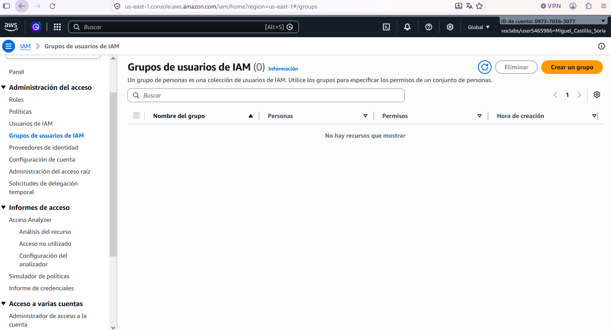
Grupos · 1 punto
Formulario de alta de grupos. El recorrido se realiza como simulación por las restricciones del laboratorio.
La imagen se carga desde media/ al guardar los archivos juntos.
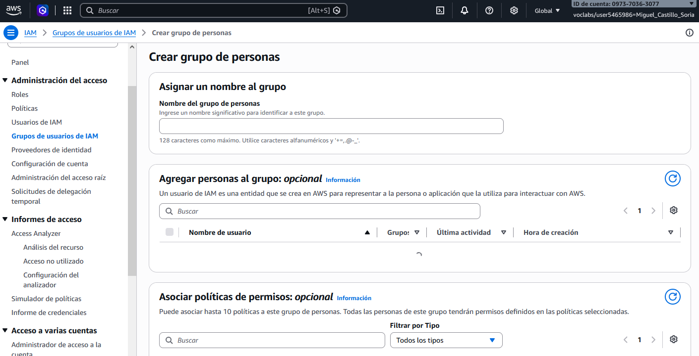
Grupos · 1 punto
Configuración del grupo de ejemplo MCS-IAM-Grupo y revisión de las secciones de usuarios y políticas. El intento de creación fue rechazado por falta de permisos.
La imagen se carga desde media/ al guardar los archivos juntos.
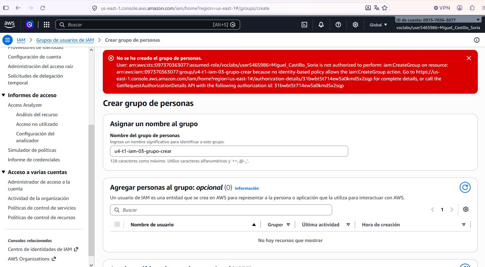
Usuarios · 1,5 puntos
Listado de usuarios de IAM y acceso al asistente de creación.
La imagen se carga desde media/ al guardar los archivos juntos.
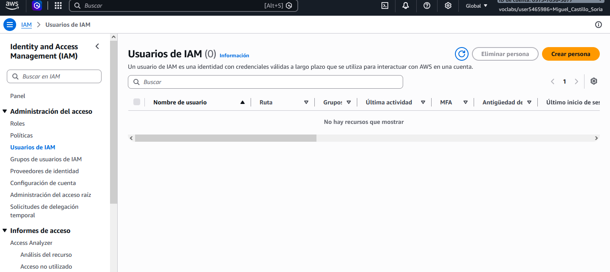
Usuarios · 1,5 puntos
Nombre de ejemplo MCS-IAM-Usuario utilizado durante el recorrido del asistente.
La imagen se carga desde media/ al guardar los archivos juntos.
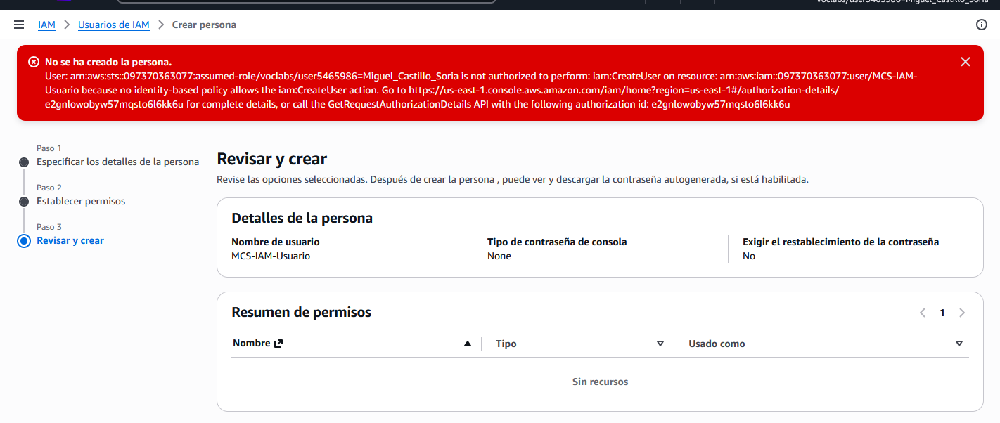
Usuarios · 1,5 puntos
Opciones de acceso a la consola, contraseña y cambio de contraseña en el primer acceso. La contraseña se mantiene oculta.
La imagen se carga desde media/ al guardar los archivos juntos.
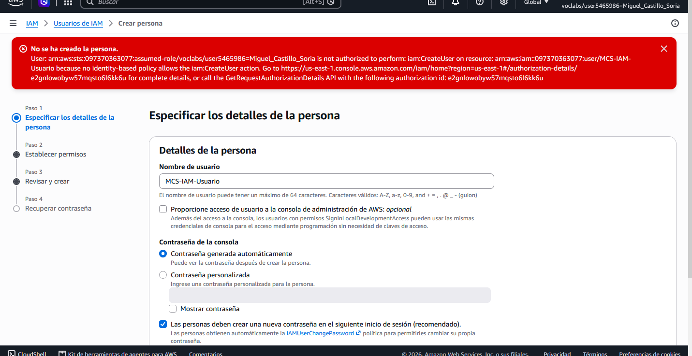
Usuarios · 1,5 puntos
Selección de Adjuntar políticas directamente y de AmazonEC2ReadOnlyAccess para representar el acceso de solo lectura a EC2.
La imagen se carga desde media/ al guardar los archivos juntos.
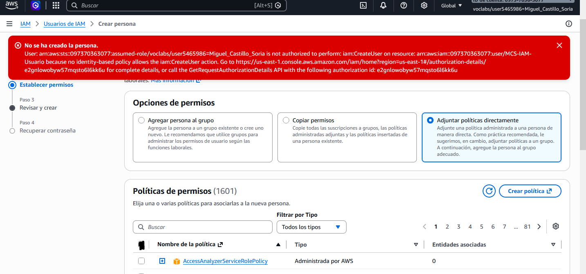
Usuarios · 1,5 puntos
Revisión del usuario y etiqueta Proyecto = Unidad4-IAM. El asistente se cancela sin confirmar el alta.
La imagen se carga desde media/ al guardar los archivos juntos.
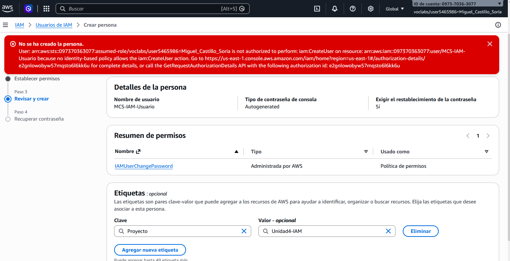
Políticas · 4 puntos
Listado de políticas existentes y acceso al editor. Una política define los permisos mediante un documento JSON.
La imagen se carga desde media/ al guardar los archivos juntos.
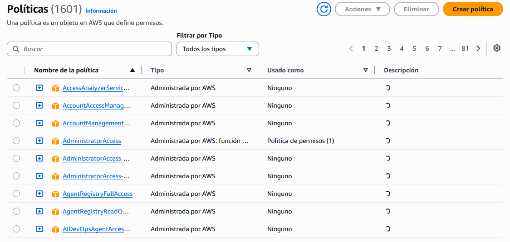
Políticas · 4 puntos
Editor visual con el servicio EC2 y las acciones CreateTags y DeleteTags para crear y borrar etiquetas.
La imagen se carga desde media/ al guardar los archivos juntos.
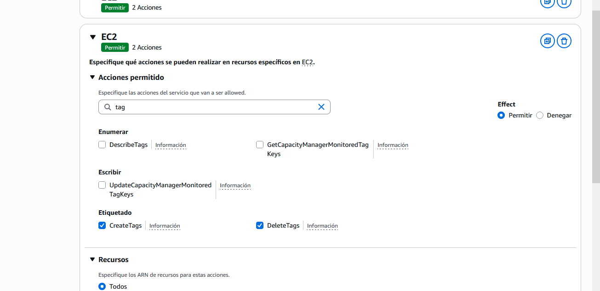
Políticas · 4 puntos
Editor JSON con DescribeInstances, CreateTags y DeleteTags en EC2, y ListAllMyBuckets en S3; Resource con asterisco según el enunciado.
La imagen se carga desde media/ al guardar los archivos juntos.
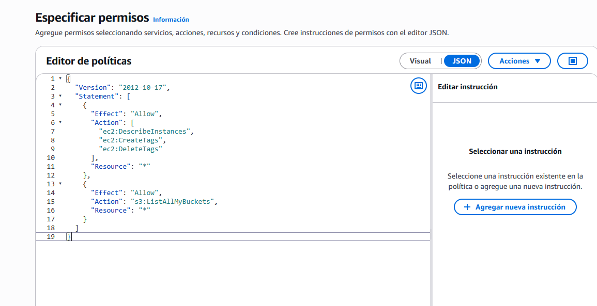
Políticas · 4 puntos
Revisión de la política de ejemplo MCS-IAM-Politica-EC2-S3. No se confirma su creación.
La imagen se carga desde media/ al guardar los archivos juntos.
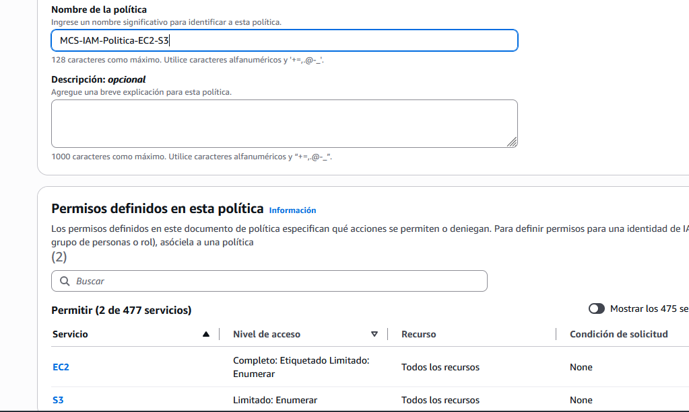
Roles · 3,5 puntos
Listado de roles existentes y acceso al asistente. Los roles se asumen para realizar acciones con sus permisos.
La imagen se carga desde media/ al guardar los archivos juntos.
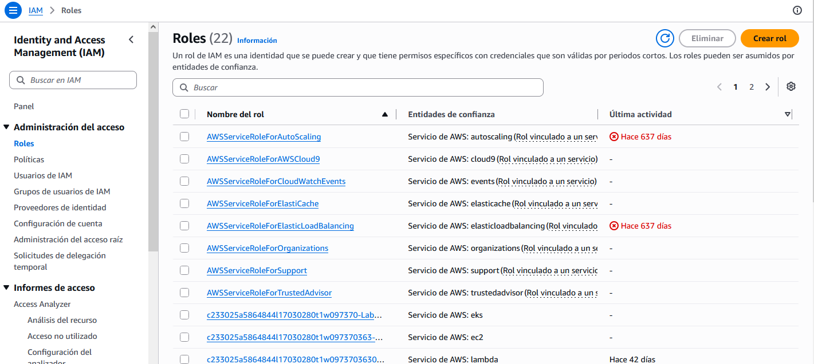
Roles · 3,5 puntos
Servicio de AWS como entidad de confianza y EC2 como caso de uso: se representa quién podrá asumir el rol.
La imagen se carga desde media/ al guardar los archivos juntos.
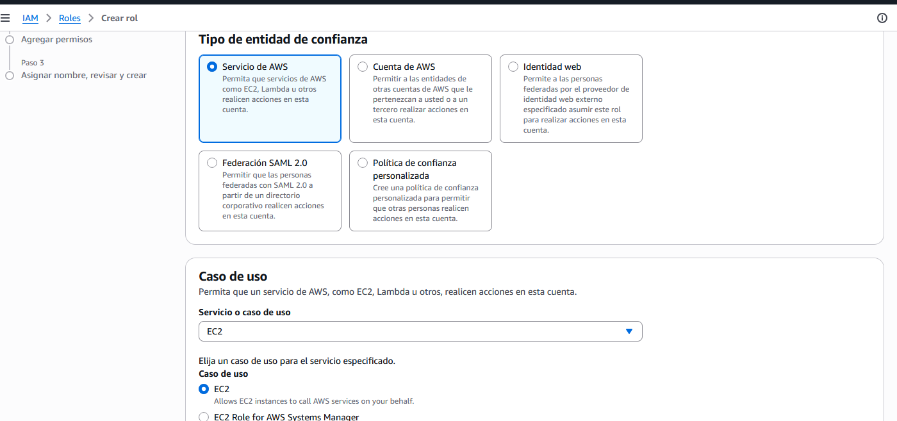
Roles · 3,5 puntos
Selección de la política administrada AmazonEC2FullAccess para el rol de la simulación.
La imagen se carga desde media/ al guardar los archivos juntos.
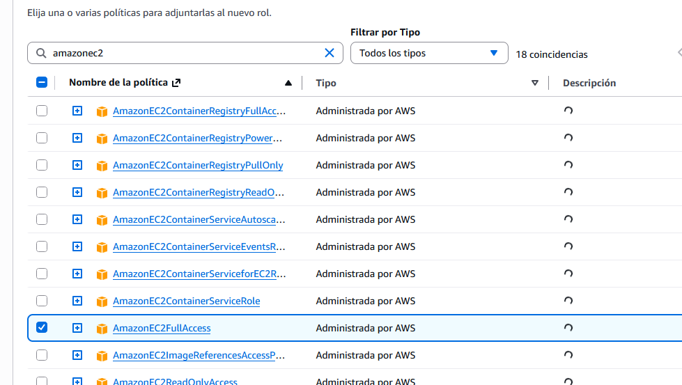
Roles · 3,5 puntos
Incorporación de AmazonS3FullAccess manteniendo AmazonEC2FullAccess seleccionada.
La imagen se carga desde media/ al guardar los archivos juntos.
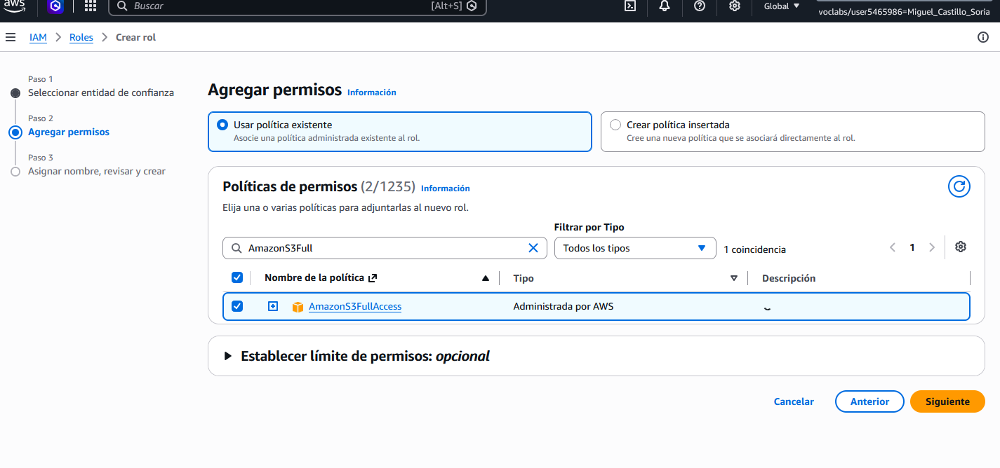
Roles · 3,5 puntos
Revisión de MCS-IAM-Rol-EC2, confianza en EC2, ambas políticas y etiqueta Proyecto = Unidad4-IAM. No se confirma la creación.
La imagen se carga desde media/ al guardar los archivos juntos.
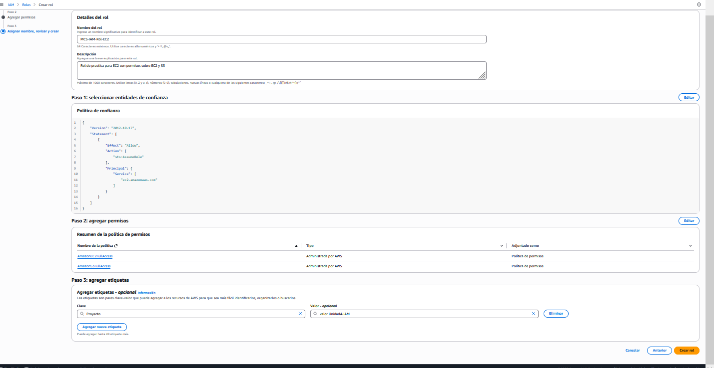
Cierre
Cierre de los asistentes y finalización del laboratorio de AWS Academy.
La imagen se carga desde media/ al guardar los archivos juntos.
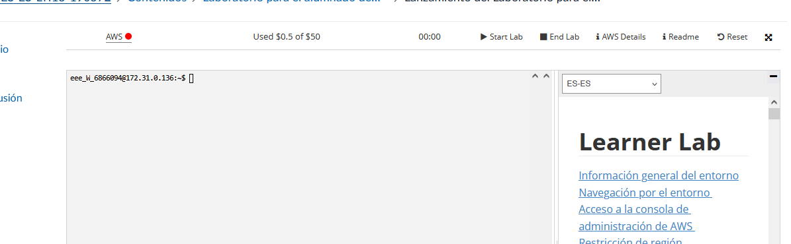
Configuración utilizada en el apartado 3. Consulta instancias, enumera buckets y permite crear y borrar etiquetas de EC2. El enunciado solicita todos los recursos.
{
"Version": "2012-10-17",
"Statement": [
{
"Sid": "ConsultarInstanciasYEtiquetasEC2",
"Effect": "Allow",
"Action": [
"ec2:DescribeInstances",
"ec2:CreateTags",
"ec2:DeleteTags"
],
"Resource": "*"
},
{
"Sid": "ListarBucketsS3",
"Effect": "Allow",
"Action": "s3:ListAllMyBuckets",
"Resource": "*"
}
]
}DescribeInstances permite consultar instancias; ListAllMyBuckets, enumerar buckets; CreateTags y DeleteTags, gestionar etiquetas. Las políticas de acceso total del apartado de roles se seleccionarán únicamente para representar lo solicitado en el ejercicio.
Un grupo reúne usuarios; un usuario es una identidad; una política define permisos y un rol es una identidad que puede asumirse. En el rol se distingue la confianza en EC2 de los permisos sobre EC2 y S3.
Las configuraciones se han trabajado mediante simulación por las restricciones de Academy. Las políticas de acceso total se han seleccionado para representar lo solicitado por el enunciado.